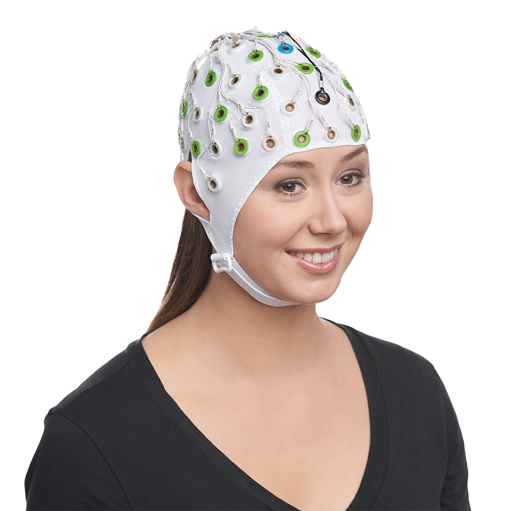
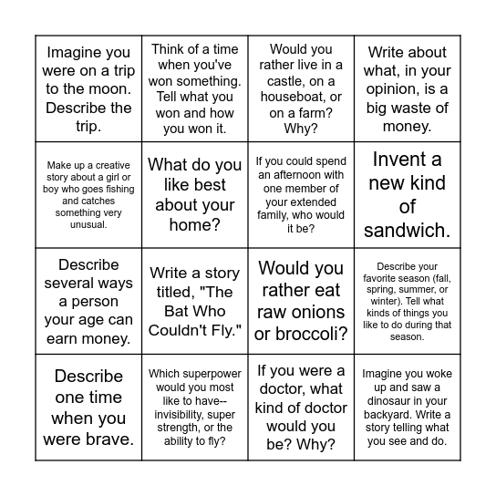
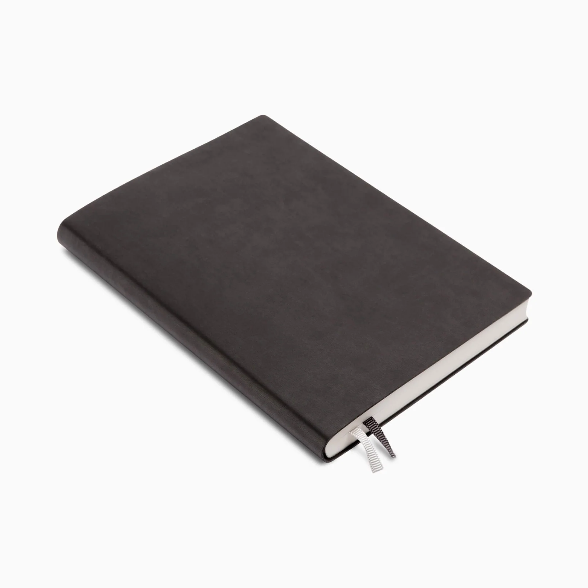

<div class="textcontainer">
<p class="margin"> </p>
<h3>Week 1: Final Project Proposal</h3>
<p class="margin"> </p>
At the moment, I have 2 main ideas for my final project.
<p class="margin"> </p>
<h4>Idea 1: EEG with image projection</h4>
<p class="margin"> </p>
The first idea would be a device that would monitor the brain firing patterns of someone. These patterns would be classified into waves: Delta, Theta, Alpha, Gamma, Beta. These waves would then be used to generate images. The images would either be projected into a digital image or it would be drawn by a device. I would want the images to be some what abstract. It would be helpful if it could be attached to an AI generator. The brain states of the person would be converted into a text that would be fed into AI image generator. Other options: EMG, Pulse, eye movement, body movment.
<p class="margin"> </p>

<img src="Visual.png"width="50%">
<p class="margin"> </p>
<h4>Idea 2: Brain state Journal</h4>
<p class="margin"> </p>
My second idea would invole reading someones mental state and creating helpful journal prompts depending on their state. Im not sure if this will be done from using an already made wearable (apple watch, fitbit, swoop, etc) or I would make a device that a person can wear. The state of the person would be used to generate a prompt from a large directory of journal prompts.
<p class="margin"> </p>


<p class="margin"> </p>
Template Credit: Clarissa Briasco-Stewart PS70
</div>